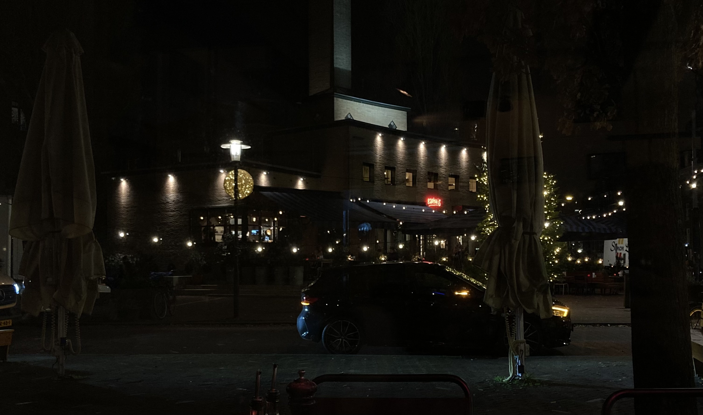

Thoughts November 2024

Nice building in Amsterdam
Oost this month.
A collection of some of the things I learned and some of the
thoughts I had this month.
Self-Hosting Journey
I have a small PC connected to a TV-screen that I use to watch
TV, because I thought this would work way better than a
"SMART"-TV (and it does! I really don't know why you would buy
an absolute shite product like that). I thought I could just use
this computer to act as a server and use it to self-host a bunch
of stuff at the cost of always having it on. I installed Ubuntu
Server on it, so far I've got:
- Pihole
for blocking ads on any device connected to my
network
- Wireguard as a
VPN tunnel so I can access my network from
anywhere.
- A shared folder with Samba for file
sharing. Using this for back-ups and photos as cloud
storage!
- A little Docker container that scrapes interesting job
postings from indeed etc. and puts them in my Samba
share (code not on Github yet).
I hope to do a bunch of cool stuff with this in the future. Like
hosting this website, having more useful containers running that
automatically do stuff for me, and a place where I can host my
machine learning projects.
Other stuff
- What the hell is up with LLMs and generating
the word "key"? Key Insights, Key Takeaways, Key Points, Key
Issues. This word makes my LLM-alarm go off now.
- People often say the 2-axis system (right-left,
progressive-conservative) is a much too simple system for
analyzing the positions of political parties. For the
Netherlands, seeing that parties tend to fall on a straight
line, it looks like it's too
complicated :-)
Reading...
- The Outsider, Albert Camus
- Der Prozess, Franz Kafka
- The Culture of Narcissism, Cristoph Lasch